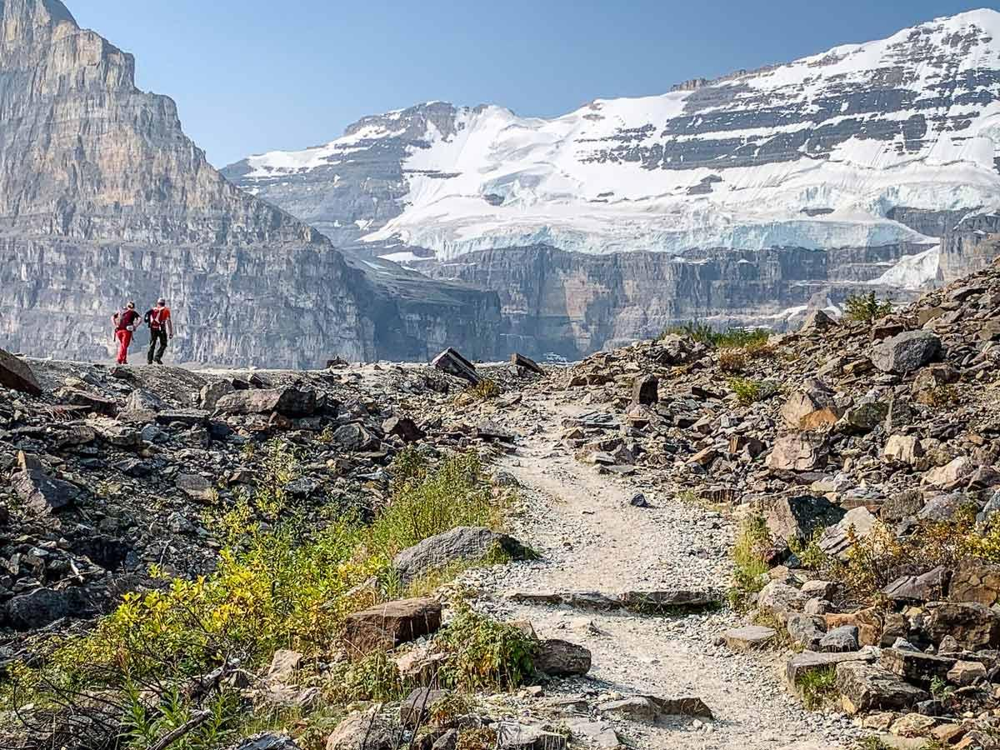

← 레이크 루이스
🥾 Plain of Six Glaciers
Lake Louise
⭐ 웅장한 빙하를 가장 가까이에서 만날 수 있는 레이크 루이스 대표 장거리 트레킹

📅 우리 일정
Day 3 오후 (충분한 체력과 시간이 있을 때 추천)
🏞 기대 풍경
🧊 Victoria Glacier를 가까이에서 감상
🏔 여섯 개의 빙하가 둘러싼 계곡
☕ Plain of Six Glaciers Tea House
🌲 울창한 숲과 고산 풍경
📸 레이크 루이스 최고의 장거리 트레킹
📏 기본 정보
🚶 걷는 거리
왕복 약 13.8km
⏱ 걷는 시간
약 4.5~5.5시간
💪 난이도
어려움
📈 고도차
약 590m
🚻 편의시설
✔ 화장실 (레이크 루이스 주차장)
✔ Plain of Six Glaciers Tea House
✔ 간단한 음식·음료 구매 가능
✖ 트레일 중간 별도 편의시설 없음
🎒 준비물
👟 트레킹화 (필수)
💧 물 1~1.5L
🍫 간식 또는 에너지바
🧥 바람막이
🕶 선글라스 및 모자
🍰 Tea House 추천 메뉴
☕ Tea House Blend Tea
🥣 오늘의 수프 (Soup of the Day)
🫓 Tea Biscuit
🍰 홈메이드 케이크
💡 여행 Tip
✔ Lake Agnes Trail보다 사람이 적어 더욱 조용한 분위기에서 트레킹을 즐길 수 있습니다.
✔ 마지막 구간은 빙하와 가까워질수록 바람이 강해질 수 있으니 바람막이를 준비하세요.
✔ Tea House는 인기 있는 휴식 장소이므로 잠시 쉬어가기 좋습니다.
✔ 시간이 충분하다면 Lake Agnes 코스와 연결하여 원형 코스로 걸을 수도 있습니다.
📍 Google Maps
🗺 트레일 지도
← 레이크 루이스